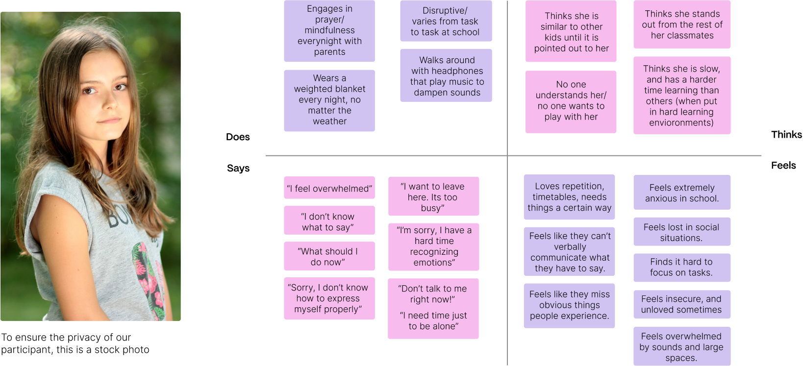
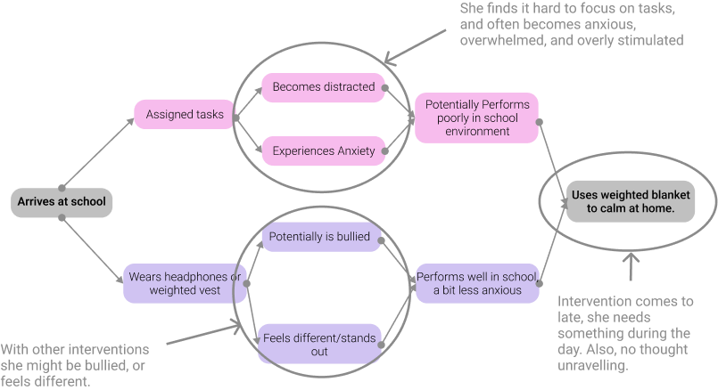
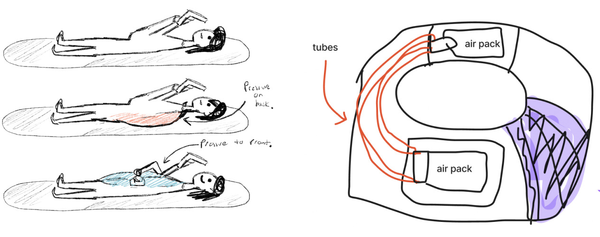
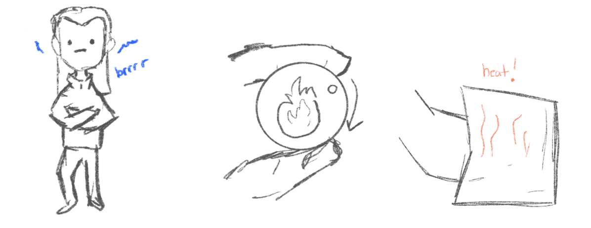
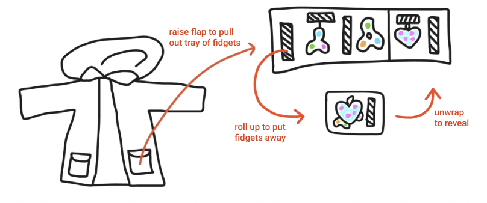
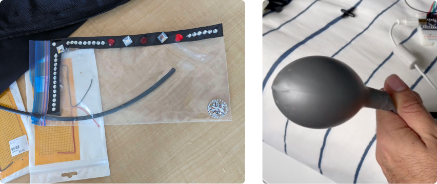
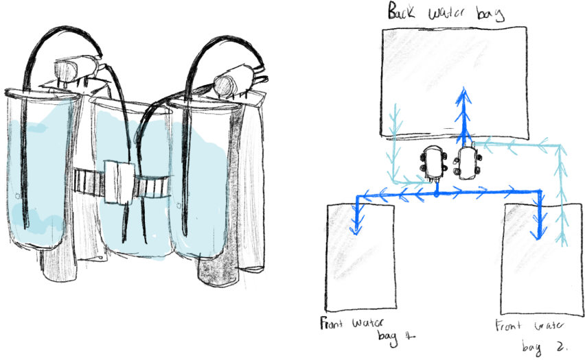
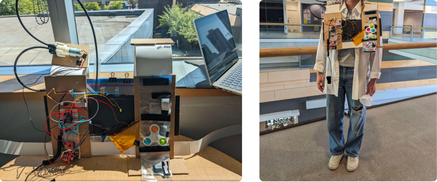
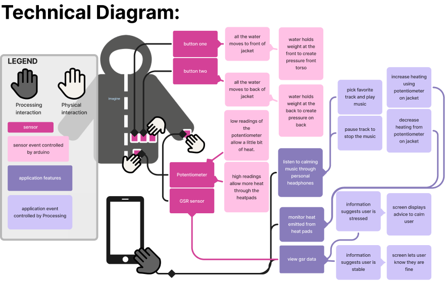

The Imagine Jacket is adjustable jacket that
utilizes deep pressure therapy and temperature
regulation to create a comfortable environment
for the individual wearing it. It features discreet,
easily accessible controls and is accompanied
by a mobile application that offers
further customization and monitoring options.
I worked in a team of three,
alongside Elizabeth Duong-Thai and Keyaan Vegdani. My role
included the design and programming of the
mobile application, as well as coding Arduino to
Processing communication between the app
and physical protype.

In order to properly understand the struggles that young adults with ASD face, we conducted
thorough research on the topic, along with interviewing an individual with ASD.
We found that possible concerns included:
We aimed to create a discrete and comforting solution to help regulate these feelings.
We interviewed Sersha, a 14 year old girl living with Asperger's in order to gain closer insight into our
user group and pinpoint their central needs.
We used an empathy map to acknowledge and illustrate her concerns.

The main points we observed:
Deep pressure therapy helps to relax the nervous system and aids in minimizing sensory overload. We
also noted that Sersha often feels overstimulated in loud environments, she likes to use her
headphones to play music that eases these emotions
She also voiced her concerns about feeling like she stands out next to other kids or that she looks
different. Therefore, my team and I aimed to create a product that would be subtle and comfortable.
the diagram below maps out both the user experience of our persona, and the three major pain points
we identified.

The experience can be divided into using existing interventions (headphones and weighted vest) or nothing.
The pain points are as follows:
In researching existing products designed with deep pressure therapy in mind, we came across an
item called the Snug Vest by Linda Fraser. We compared its design against our goals and agreed that
it did not appear very discrete and may result in the wearer feeling further ostracized from their
peers.
The Imagine Jacket takes inspiration from the Snug Vest’s efficient air pressure distribution, although
it also addresses several other pain points present within the ASD community which sets it apart from
many existing products.
We believed our solution should be based upon five important area’s of focus:
We began with the general concept of building a jacket with embedded technological enhancements.
This article of clothing appears as an ordinary jacket, although it contains integrated features such as
temperature control, different pressure settings, and the ability to pair with a mobile application.
The app offers meditative soundscapes to help soothe the user, as well as different tabs which allow
them to monitor how they are feeling.
These features are controlled through buttons and dials hidden within the jacket that are only
accessible to the wearer and/or their caretaker. This ensures that they don’t feel ostracized and can
self-sooth discretely.
On the backside there are button-controlled air pumps which circulate air between the front and back
of the jacket. The air travels through a belt shaped area around the middle of the jacket so that
pressure can be felt as a gentle squeeze.

This pressure can be combined with temperature control to imitate a warm hug. Change in
temperature is controlled through a potentiometer which is attached to heating pads that respond
accordingly.

If the wearer begins to feel too warm however, the jacket offers a detachable hood and sleeves
which are connected by Velcro for easy removal and attachment.

There is also a galvanic skin response (GSR) sensor at the cuff of the sleeve that the user can wear
around their fingers to observe their current emotional state. This would help them or their caretaker
keep track of certain situational reactions, helping them to avoid or prepare a solution if that same
event were to occur again
An additional playful touch is the fidget toy compartment, this is folded pocket on the side of the
jacket secured by Velcro. When a user feels distracted, anxious, or overexcited while trying to
complete a task they can unravel this pocket, unhook their favorite toy, and conveniently put
everything back when they wish to do so.

The digital application for our jacket included many iterations, we considered a web application,
mobile app, along with various methods of jacket control.
Initially we adapted to the concept of two-way control, where the jacket could be controlled both
physically and digitally. However, during development we found that this extra step was slightly
redundant, as the buttons on the jacket were the most accessible option and the repeated buttons
would likely cause more confusion for the user. We concluded that a mobile app with the main
purpose of monitoring was the most efficient mode of interaction.
Below is our very first digital prototype as a web application, followed by an early
mobile app wireframe, designed to include two-way control between the app and the jacket.


Our adaptability helped us persevere through this project as we encountered many technical issues,
along with a couple faulty components. Our initial idea of air pressure worked well in theory but fell
flat when our air bags failed to hold the air properly. After testing alternative options such as balloons
and a diy bag, we decided to make a brisk pivot to water pressure instead. This worked well for us,
as the water provided a comforting weighted feel and did a great job at moving pressure between the
two (back and front) pockets.


For our first cardboard prototype we used Ziplock bags to hold the fidget toys and water. Later on, we
upgraded to IV bags and fabric pockets for a more sleek and secure feel.

The final composition of the jacket includes a stretchable fabric belt including water pockets situated
on the front and back, secured by Velcro which offers adjustable waist sizing. The potentiometer dial
and buttons are color matched to blend in with its exterior, while the fidget toy compartment is also
hidden away within a foldable pocket

The Imagine Jacket is designed for versatility, flexibility, and a discreet experience. It prioritizes ease
of use and quick interventions for young adults with Autism Spectrum Disorder.

The final app includes an straightforward interface, a tracking tab to track the wearers galvanic skin
response status, a temperature tab to view the amount of heat being emitted from the heating pads,
and lastly a music tab featuring meditative tracks to help ground the user when they are
overwhelmed.


Sensor input from the jacket is read by Arduino and passed over to Processing through serial
communication. This provides a constant stream of information, one byte at a time (with a baud rate
of 9600), allowing the app to update and provide accurate results for the user to monitor.